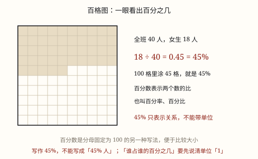

百分数的意义
百分数表示一个数是另一个数的百分之几，只表示倍比关系、不带单位；它与分数、小数可以互相改写。
| 所属主题 | 数的意义和性质 |
|---|---|
| 所属模块 | 数与代数 |
| 课标学段 | 第三学段（5~6年级） |
| 前置知识 | 分数的意义与分数单位、小数的意义和性质 |
| 核心素养 | 数感数据意识应用意识 |
课标要求
| 统计与概率·数据的收集、整理与表达 | 结合具体情境，探索百分数的意义，能解决与百分数有关的简单实际问题，感受百分数的统计意义。 印刷第 40 页 行为动词：探索 |
|---|---|
| 统计与概率·数据的收集、整理与表达 | 在简单的实际情境中，应用统计图表或百分数，形成数据意识和初步的应用意识。 印刷第 40 页 行为动词：运用 |
说明
百分数表示一个数是另一个数的百分之几，也叫百分率或百分比。写法是在数后面加符号「%」，比如 85% 读作「百分之八十五」，意思是 85/100。它和 85/100 说的是同一件事，只是写起来短、比起来快。
百分数最大的特点是：它只表示两个数之间的倍比关系，后面不能带单位。「男生占全班的 52%」，是男生人数和全班人数在比，不是 52 个男生，更不是 52% 个男生。分数不同——3/4 米是一个具体的长度，可以带单位；85% 后面永远不跟「米」「元」「人」。
与分数、小数的互化：百分数化小数，去掉 %、小数点向左移两位，85% = 0.85；小数化百分数，小数点向右移两位、加上 %，0.07 = 7%。百分数化分数，先写成分母是 100 的分数再约分，85% = 85/100 = 17/20；分数化百分数，先化成小数再改写成百分数，3/4 = 0.75 = 75%。
为什么要统一成「百分之几」？因为分母统一了才好比。3/5 和 5/8 谁大，要通分；可它们都化成百分数——60% 和 62.5%——一眼就能比出大小。合格率、出勤率、折扣、手机电量都用百分数，就是这个道理。
生活中百分数几乎无处不在：饮料瓶上的「果汁含量 ≥ 30%」、衣服吊牌上的「棉 100%」、天气预报的「降水概率 80%」。它是用同一个标准（100 份）给各种各样的「占比」拍的一张统一规格的照片。
使用场景
折扣促销：「全场八折」就是按原价的 80% 出售，看到折扣要想成百分数再算。
手机电量：屏幕上显示 25%，是剩余电量占电池总容量的 25%，它不带单位，只说比例。
体检合格率、视力达标率：46 人合格、全班 50 人，合格率 92%，两个班一比就知道哪个好。
食品营养成分表：果汁含量 30%、蛋白质含量 3.2%，都靠百分数统一口径，方便比较不同商品。
注意点
百分数后面不能带单位。「25% 千克」「92% 人」都是错的；要表示具体的量，就化成小数或分数再带单位。
百分号不能漏。85 和 85% 差 100 倍：85 是 85 个一，85% 只是 0.85。
写「百分之几」先化对。46 ÷ 50 = 0.92，写成百分数是 92%；直接写「46÷50=92%」跳过小数这步，最容易出错。
百分数不一定小于 100%。合格率、出勤率不会超过 100%，但增长率、完成率可以：本月产量是上月的 120%，就是超产了。
分母是 100 的分数不一定是百分数。85/100 米是 0.85 米，是具体的量；只有表示「谁是谁的百分之几」的比，才叫百分数。

图 1：百格图把「百分之几」画成了看得见的格子
为什么是这样
算理推导
比较 3/5 和 5/8 哪个大：通分要找分母 5 和 8 的公倍数，麻烦。把两个都换成「分母是 100」的写法——3/5 = 60/100，5/8 = 62.5/100——分母一样，比分子就行。
所以百分数的本质是：把各种各样的比，都换算成「占 100 份中的几份」，统一标准，方便比较和交流。85% 就是 85/100 的缩写。
百分数与分数的分界：85/100 米带上了单位，说的是一个具体的长度；85% 不带单位，说的是两个量的倍比。同一个数，用法不同，身份就不同。
与小数互化的道理：85% 就是 85/100，而 85/100 = 0.85，所以「去掉 %」相当于除以 100，小数点左移两位；反过来，加上 % 相当于乘 100，小数点右移两位。
百分数在统计里最好用：全班的合格率 92%、全年级的合格率 95%，都是「合格数 ÷ 总数」再写成百分之几。总数不同也能直接比，因为都被拉到了同一个 100 份的尺子上。
动手实验
准备一张画成 100 个小格的方格纸（10×10）。掷一颗骰子或闭眼点一格，数一数涂满 25 格、60 格、100 格分别是什么感觉；再把 25%、60%、100% 写成小数和分数，三种写法并排贴在一起。然后在家里找三个百分数（饮料瓶、衣服吊牌、手机电量），抄下来并互化，检查「不带单位」这条规矩。
按场景的例题
例 1（场景：购物消费） 开学季书包打折
一个书包原价 200 元，开学季打八折出售。现价是多少元？
解：八折就是原价的 80%：200 × 80% = 200 × 0.8 = 160（元）。
答：现价是 160 元。
例 2（场景：计量与估算） 手机剩余电量
一部手机电池容量是 4000 毫安时，屏幕显示剩余电量 25%。还剩多少毫安时？用掉的是总容量的百分之几？
解：剩余：4000 × 25% = 1000（毫安时）；用掉：1 - 25% = 75%，即 3000 毫安时。
答：还剩 1000 毫安时，用掉了 75%。
例 3（场景：校园生活） 体检视力统计
六（1）班 50 人参加体检，视力合格的有 46 人。这个班的视力合格率是百分之几？
解：合格率 = 合格人数 ÷ 总人数：46 ÷ 50 = 0.92 = 92%。
答：视力合格率是 92%。
例 4（场景：饮食与配比） 看饮料瓶上的标签
一瓶 500 毫升的饮料，标签写着「果汁含量 ≥ 30%」。这瓶饮料里果汁至少有多少毫升？剩下的至少占百分之几？
解：果汁：500 × 30% = 150（毫升）；剩下的至多占 1 - 30% = 70%，至多 350 毫升。
答：果汁至少 150 毫升，其余至多占 70%。
常用推论
部分 = 整体 × 百分率；百分率 = 部分 ÷ 整体。合格率 = 合格数 ÷ 总数，出勤率 = 出勤人数 ÷ 总人数。
售价 = 原价 × 折扣：打八折就是原价 × 80%，打七五折就是 × 75%。
某份 = 总量 × 该份占比：扇形统计图里每块扇形占整体的百分数，就是这一份的占比。
百分数与小数互化：去掉 % 小数点左移两位，加上 % 小数点右移两位。
易错点
错「这根绳子长 25% 米」。
为什么错百分数只表示倍比关系，后面不能带单位；带单位的量要用小数或分数表示。
正确改成「这根绳子长 0.25 米」，或说「这根绳子是那根的 25%」。
错打八折算成 200 × 8 = 1600 元。
为什么错把「八折」当成了 8。八折是按原价的 80% 出售。
正确200 × 80% = 160 元。
错视力合格率算出 0.92，化百分数时写成 9.2%。
为什么错小数化百分数，小数点要向右移两位再加 %。0.92 右移两位是 92，得 92%；只移了一位，就缩小到十分之一。
正确46 ÷ 50 = 0.92 = 92%。
错认为百分数一定小于 100%，看到「完成 120%」以为是错的。
为什么错合格率、出勤率这类「部分占整体」确实不超过 100%，但增长率、完成率是与原来相比，可以超过 100%。
正确完成 120% 就是超额完成，比计划多了 20%。
直观理解
百分数像把大小不同的蛋糕都切成 100 块再来比：一块蛋糕分 5 块吃了 3 块，另一块分 8 块吃了 5 块，直接数块数比不出来；都换成「100 块里吃了几块」，一眼就见高下。它是一把统一的尺子，量的是「占比」而不是「数量」，所以后面永远不跟单位。
百分数，比关系，分母一百好对比；后面不跟单位走，去%左移两位记。